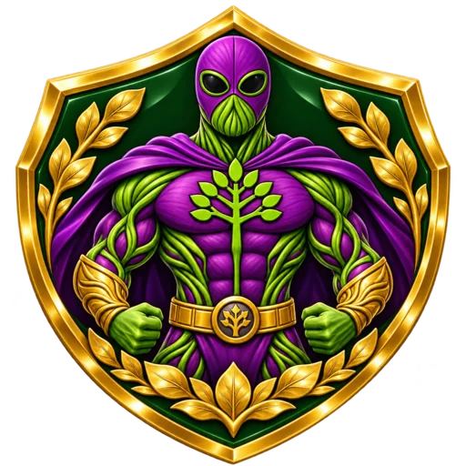

ROOTED IN STRATEGY. POWERED BY TREE.
Grove Chess.
Protect your Tree Hero. Think ahead.

THE HEART OF YOUR GROVEYour hero.
Your king.TREE HERO EDITION
Your king.TREE HERO EDITION
The WoodlandPine pieces · Computer
PINEYou, the gardenerBirch pieces · White
BIRCHTap or click a piece, then a highlighted square to move. No dragging needed. Keyboard: arrow keys to explore, Enter to select, Escape to clear.
Select a piece to learn its name and how it moves.